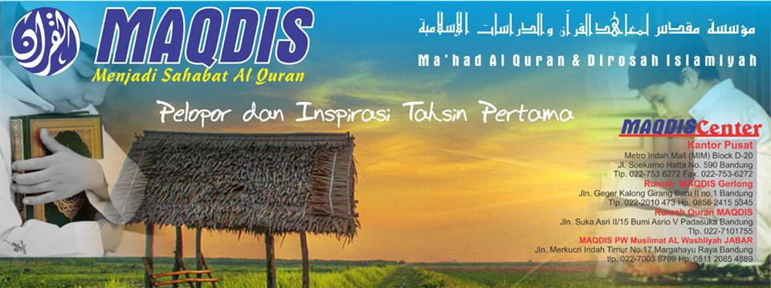
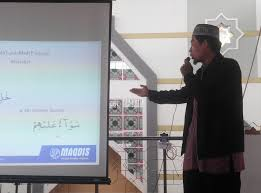

Program MAQDIS
- Tahsin Al Qur'an
- Tahsin Dewasa
- Tahsin Anak
- Tahfizh Al Qur'a
- Tahfizh Anak
- Tahfizh Dewasa
- Prasekolah
- Tafsir Al Qur'an
- Pelatihan TAMAT Al Qur'an
Ma'had Al Qur'an dan Dirosah Islamiyah (MAQDIS)
MAQDIS adalah lembaga belajar Al Qur'an yang didirikan pada tahun 2001,
Kegiatan belajar mengajar di Kelas bersama slah seorang asatiz MAQDIS
